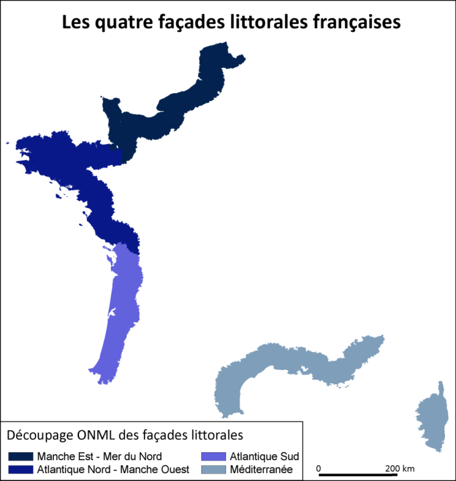

Mesurer la résidentialisation sur les littoraux
L’un des objectifs du projet DURB était de produire un diagnostic territorialisé de l’affirmation d’un modèle de développement résidentiel sur les littoraux métropolitains français. Il s’agissait notamment d’avoir une approche élargie de ce processus de résidentialisation en ne se limitant pas à la pression démographique et touristique ou à l’essor de l’économie résidentielle. Le projet DURB s’est ainsi notamment intéressé aux impacts de ces évolutions sur les ressources fiscales et financières des collectivités territoriales.
Le processus de résidentialisation affecte en effet le volume des ressources du bloc communal, mais aussi sa structure. L’attractivité des littoraux et leurs mutations économiques renforcent le poids des recettes fiscales payées par les ménages (taxe d’habitation et taxe sur le foncier bâti) face aux impôts économiques locaux (contribution économique territoriale). Cette « résidentialisation » des ressources fiscales des collectivités est d’autant plus importante qu’elle peut conduire à une forme de dépendance dans un contexte d’austérité et de réduction des dotations de l’Etat.
Par la construction d’une typologie, il s’agissait d’identifier l’intensité de ce processus de résidentialisation, sa diffusion vers les arrière-pays littoraux et l’existence de disparités spatiales à différentes échelles.
Les littoraux métropolitains : quelle profondeur pour la bande littorale ?
Afin d’observer d’éventuels phénomènes de diffusion ou de report des processus vers les arrière-pays, le choix a été fait de travailler sur une bande de 60 km de profondeur, plus large que celle habituellement utilisée dans la littérature. Cela permet de prendre en compte l’ensemble des aires urbaines des agglomérations rétrolittorales comme Nantes ou Bordeaux. Il s’agit aussi et surtout de comparer l’influence des dynamiques littorales sur leur arrière-pays d’une façade à l’autre. On utilise pour ce faire le découpage du littoral métropolitain en 4 grandes façades proposé par l’ONML.

Maille communale et approche diachronique
L’étude propose une approche diachronique en remontant au début des années 2000, tout en étant tributaire de la diversité des organismes produisant les données utilisées. Elle est menée en utilisant le découpage communal au 1er janvier 2019, c’est-à-dire en tenant compte du récent mouvement de fusions communales.
Face à l’instabilité des périmètres intercommunaux et aux effets des réformes fiscales sur la répartition des recettes de la fiscalité locale entre communes et EPCI, le choix a été fait de travailler pour les données fiscales sur le bloc communal, en additionnant l’ensemble des recettes produites sur la commune, qu’elles reviennent à la commune ou à un groupement intercommunal. Pour les données fiscalo-financières, l’utilisation de moyennes bisannuelles permet de gommer l’impact d’éventuelles évolutions conjoncturelles.
Caractériser le processus de résidentialisation en croisant 4 familles d’indicateurs
Afin de mesurer l’avancée du processus de résidentialisation, l’étude combine quatre grandes familles d’indicateurs :
- des indicateurs démographiques,
- des indicateurs socio-économiques,
- des indicateurs sur les formes d’occupation du sol et l’artificialisation,
- des indicateurs fiscalo-financiers.
L’apport de ce travail réside ainsi dans cette approche multidimensionnelle et notamment dans l’utilisation des données fiscales et budgétaires locales, peu utilisées hors des problématiques de finances locales.